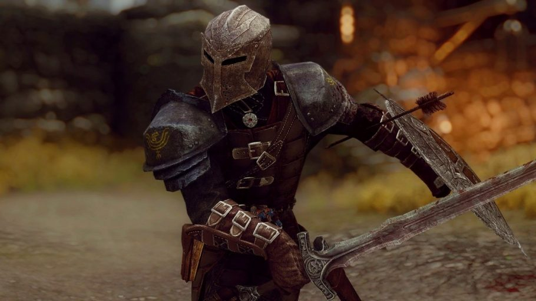
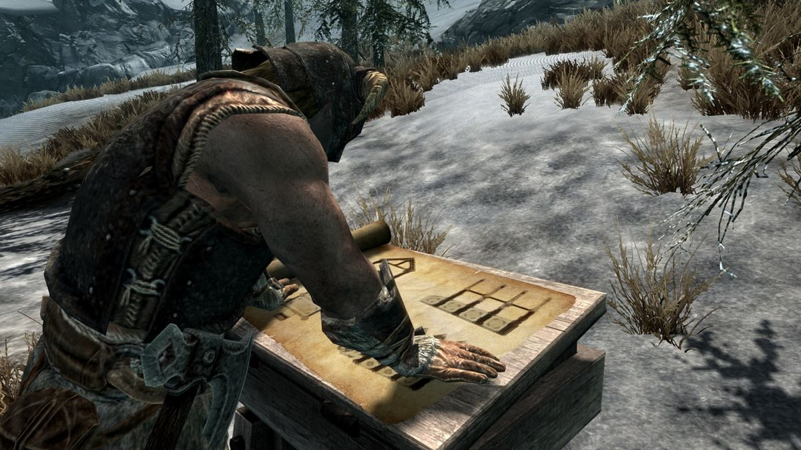
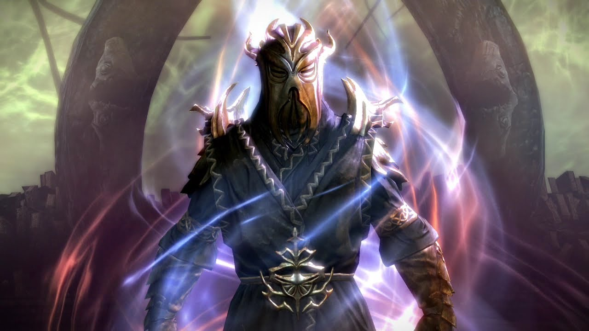

The Elder Scrolls V:Skyrim
DLC
Dawnguard
The Elder Scrolls V: Skyrim Dawnguard is an expansion pack for the popular action role-playing game, The Elder Scrolls V: Skyrim. Developed by Bethesda Game Studios and published by Bethesda Softworks, Dawnguard offers players an immersive experience in the vast open world of Skyrim. Initially released for the Xbox 360 in English-speaking regions on June 26, 2012, it later became available in France, Germany, Italy, and Spain in mid-July of the same year. The expansion pack was then made accessible to Microsoft Windows users via Steam on August 2, 2012. However, due to technical difficulties, the PlayStation 3 version of Dawnguard faced delays and was eventually released on February 26, 2013. The storyline of Dawnguard revolves around an ancient prophecy foretold by an Elder Scroll. Players have the option to align themselves with the Dawnguard, an organization dedicated to eradicating vampires, or join the Volkihar, a powerful clan of vampires led by Lord Harkon. The Volkihar possess the ability to transform into fearsome "vampire lords" and seek to use an Elder Scroll to permanently extinguish the sun. The expansion pack introduces new armors, items, weapons, and characters, providing players with a wealth of additional content to explore and enjoy. 
Hearthfire
Hearthfire, the second downloadable content add-on for the popular action role-playing game The Elder Scrolls V: Skyrim, was developed and published by Bethesda Game Studios and Bethesda Softworks respectively. Initially released for Xbox 360 on September 4, 2012, it later became available for Microsoft Windows via Steam on October 5, 2012. PlayStation 3 users in North America received the add-on on February 19, 2013, while European players had to wait until February 20, 2013. The main focus of Hearthfire is centered around the player's ability to acquire and improve land, providing them with the opportunity to construct and personalize their very own home within the game. This add-on also introduced a new feature called adoption, allowing players to adopt up to two children who can then reside with them in their newly built abode. With the addition of Hearthfire, players can truly immerse themselves in the world of Skyrim by creating a unique and personalized living space while also experiencing the joys and responsibilities of parenthood within the game
Dragonborn
The Elder Scrolls V: Skyrim - Dragonborn is the final expansion for the popular open-world RPG game, The Elder Scrolls V: Skyrim. Developed by Bethesda Game Studios and published by Bethesda Softworks, it was initially released on the Xbox Live Marketplace on December 4, 2012. The expansion later became available for Microsoft Windows on February 5, 2013, and for PlayStation 3 on February 12, 2013. In Dragonborn, the player character, known as the Dragonborn, encounters the first Dragonborn, Miraak. The game is set on the island of Solstheim, which was previously featured in The Elder Scrolls III: Morrowind's Bloodmoon expansion. Solstheim is divided into two distinct regions - one resembling the icy landscapes of northern Skyrim, and the other devastated by ash following the eruption of the Red Mountain volcano. The island's settlements and architecture reflect the cultural differences between the Nordic and Dunmeri (Dark Elves) inhabitants. Raven Rock, the main settlement, is governed by House Redoran and protected by the Redoran Guard.